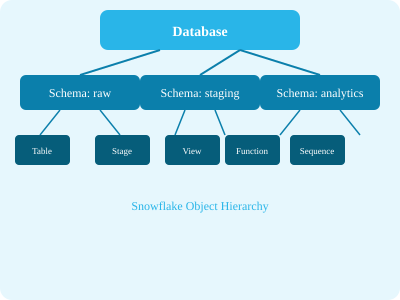

-- Create
CREATE SCHEMA sales_db.raw;
-- Create with managed access
CREATE SCHEMA sales_db.staging WITH MANAGED ACCESS;
-- Clone
CREATE SCHEMA sales_db.analytics CLONE sales_db.raw;
-- Set retention
ALTER SCHEMA sales_db.raw SET DATA_RETENTION_TIME_IN_DAYS = 15;
-- List schemas
SHOW SCHEMAS IN DATABASE sales_db;Only the schema owner can grant privileges on objects within the schema. Useful for secure data sharing.